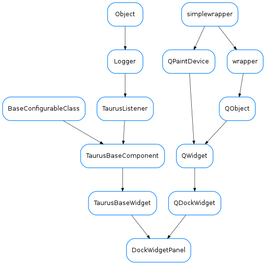

DockWidgetPanel¶

-
class
DockWidgetPanel(parent, widget, name, mainwindow)[source]¶ Bases:
PyQt4.QtGui.QDockWidget,taurus.qt.qtgui.base.taurusbase.TaurusBaseWidgetThis is an extended QDockWidget which provides some methods for being used as a “panel” of a TaurusGui application. Widgets of TaurusGui are inserted in the application by adding them to a DockWidgetPanel.